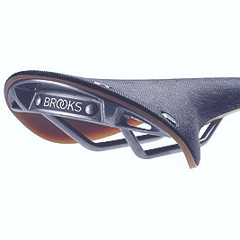

<!DOCTYPE html>
<html lang="en">
<head>
  <meta charset="UTF-8">
  <meta name="viewport" content="width=device-width, initial-scale=1.0">
  <title>before-after</title>
  <!-- <link rel="stylesheet" href="https://cdn.knightlab.com/libs/juxtapose/latest/css/juxtapose.css"> -->
  <link rel="stylesheet" href="juxtapose.css">
</head>
<body>
 
<style>
  .juxtapose{
    width: 500px !important;
    height: 500px!important;
    margin: 50px auto;
  }
</style>


<div class="juxtapose" id="foo">
  <!--    --> <!-- так выйдет без лабелей до-после -->
  <!--  -->
</div>
 
  <!-- <script src="https://cdn.knightlab.com/libs/juxtapose/latest/js/juxtapose.min.js"></script> -->

  <script src="juxtapose.js"></script>
  <script>
    slider = new juxtapose.JXSlider('#foo',
      [
        {
          src: 'img-1.gif',
          label: 'до',
          // credit: 'Image Credit'
        },
        {
          src: 'img-2.gif',
          label: 'после',
          // credit: "Image Credit"
        }
      ],
      {
        animate: true,
        showLabels: true,
        showCredits: true,
        startingPosition: "50%",
        makeResponsive: true
      });
  </script>
  
</body>
</html>